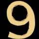

|
|
Estrela de
cinco pontas: sendo a Estrela do
Oriente ou a Estrela Iniciação, é
a que simbolizou o nascimento de Jesus. É o símbolo
do Homem Perfeito, da Humanidade plena entre Pai e Filho;
o homem em seus cinco aspectos: físico, emocional,
mental, intuitivo e espiritual. Totalmente realizado e
uno com o Grande Arquiteto do Universo. É o homem
de braços abertos, mas sem virilidade, porque dominou
as paixões e emoções. Na Maçonaria
e nos seus Templos, a abóbada celeste está
adornada de estrelas. A Estrela é o emblema do
gênio Flamejante que levam às grandes coisas
com a sua influência. É o emblema da paz,
do bom acolhimento e da amizade fraternal. |
|
|
Acácia:
a planta símbolo por excelência da Maçonaria;
representa a segurança, a clareza, e também
a inocência ou pureza. A Acácia foi tida
na antiguidade, entre os hebreus, como árvore sagrada
e daí sua conservação como símbolo
maçônico. Os antigos costumavam simbolizar
a virtude e outras qualidades da alma com diversas plantas.
A Acácia é inicialmente um símbolo
da verdadeira Iniciação para uma nova vida,
a ressurreiçãora uma vida futura. |
|
Avental:
símbolo do trabalho maçônico.
Tem a forma de um retângulo, encimado por um triângulo;
nos dois primeiros graus são simples, sem enfeites
ou adornos, e de tecido branco. Os aventais dos demais
graus, tem cor e desenhos variados, conforme os graus
que representa e conforme o rito adotado. O fundo porém
é sempre branco.
|
|
Colunas:
símbolos dos limites do mundo criado, da vida e
da morte, do elemento masculino e do elemento feminino,
do ativo e do passivo. Simboliza também a força,
a sustentação.
|
|
Compasso:
símbolo do espírito, do pensamento nas diversas
formas de raciocínio, e também do relativo
(círculo) dependente do ponto inicial (absoluto).
Os círculos traçados com o compasso representam
as lojas. No Grau de Aprendiz, ele está embaixo
do esquadro, indicando que existe, por enquanto, a predominância
da matéria sobre o espírito. A abertura
indica o nível do conhecimento humano, sendo esta
limitada ao máximo de 90º, isto é ¼
do conhecimento. |
 |
O
nº 9: é o princípio
da Luz Divina, Criadora, que ilumina todo pensamento,
todo desejo e toda obra, exprime externamente a Obra de
Deus que mora em cada homem, para descansar depois de
concluir sua Obra. O homem novenário que pelo triplo
do ternário, é a união do absoluto
com o relativo, do abstrato com o concreto. O número
nove, no simbolismo maçônico, desempenha
um papel variado e importante com significados aplicados
na sua forma ritualística. O número 9, é
o número dos Iniciados e dos Profetas.
|
|
Delta:
também chamado de Triângulo Fulgurante,
representa na Maçonaria o Supremo Criador de todas
as coisas, cujo olho luminoso é o Olho da Sabedoria
e da Providência, que observa tudo que vê
e provê. Ele simboliza também, os atributos
da Divindade: Onipresença, Onividência e
Onisciência, que o verdadeiro maçom tem como
lembrete divino de sua suprema relevância para sua
vida. |
|
Esquadro:
resulta da união da linha vertical com a linha
horizontal, é o símbolo da retidão
e também da ação do Homem sobre a
matéria e da ação do Homem sobre
si mesmo. Significa que devemos regular a nossa conduta
e as nossas ações pela linha e pela régua
maçônica, pelo temor de Deus, a quem temos
de prestar contas das nossas ações, palavras
e pensamentos. Emite a idéia inflexível
da imparcialidade e precisão de caráter.
Simboliza a moralidade.
|
|
Malhete:
pequeno martelo; emblema da vontade
ativa, do trabalho e da força material; instrumento
de direção, poder e autoridade. Um aspecto
fundamental na utilização deste instrumento
é o do discernimento e lógica que devem
conduzir a vontade. Utilizando ao caso, com força
apenas, ele passará a ser um instrumento de destruição,
incompatível com a Maçonaria.
|
|
Pavimento
em mosaico: chão em xadrez
de quadrados pretos e brancos, com que devem ser revestidos
os templos; símbolo da diversidade do globo e das
raças, unidas pela Maçonaria; símbolo
também da oposição dos contrários,
bem e mal, espírito e corpo, luz e trevas.
|
|
Pedra
bruta: símbolo das imperfeições
do espírito que o maçom deve procurar corrigir;
e também, da liberdade total do Aprendiz e do maçom
em geral. As arestas desta Pedra Bruta, cabe ao aprendiz
desbastar, disciplinando, educando, instruindo sua personalidade,
objetivando vencer suas paixões e subordinar sua
vontade à prática do bem.
|
|
A letra
G: é a sétima letra
do nosso alfabeto e que sabiamente, os Maçons
apresentam grandes questionamentos, e que através
de estudos, apresentamos um resumo dos diversos significados:
Gravitação
- É a força primordial que rege o movimento
e o equilíbrio da matéria;
Geometria ou a Quinta Ciência
- É fundamento da ciência positiva, simbolizando
a ciência dos cálculos, aplicada à
extensão, à divisão de terras,
de onde surge a noção da parte que nelas
a nós compete, na grande partilha da humanidade
e dos direitos da terra cultivada;
Geração
- É a vida perpetuando a série dos seres.
Força Criadora que se acha no centro de todo
ser e de todas as coisas;
Gênio - É
a inteligência humana a brilhar com seu mais vivo
fulgor;
Gnose - É o
mais amplo conhecimento moral, o impulso que leva o
homem a aprender sempre mais e que é o principal
fator do progresso;
Glória - a Deus;
Grandeza - O homem,
a maior e mais perfeita Obra da Criação;
Gomel - Uma palavra
hebraica, entende-se os deveres do homem para com Deus
e os seus semelhantes.
Concluiremos, sintetizando
que, a letra G é, realmente, o grande segredo
maçônico, segredo tão secreto e
misterioso, que nem mesmo os mais cultos e sábios
Maçons conseguem decifrá-lo.
|
|
Templo:
símbolo da construção
maçônica por excelência, da paz profunda
para que tendem todos os maçons. |
|
Três
pontos; triângulo: símbolo
com várias interpretações, aliás
conciliáveis: luz, trevas e tempo; passado, presente
e futuro; sabedoria, força e beleza; nascimento,
vida e morte; liberdade, igualdade e fraternidade.
|
Obs: Há muitos outros símbolos
na Maçonaria. Apresentamos aqui, somente os mais difundidos
e conhecidos.
Extraído
de:
http://www.maconaria.net
http://www.aminternacional.org
Adaptado por
Spectrum
|
|